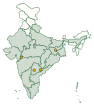
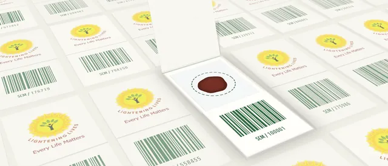
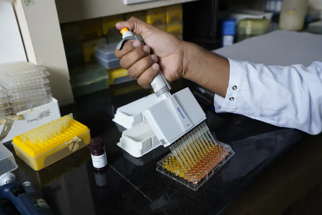
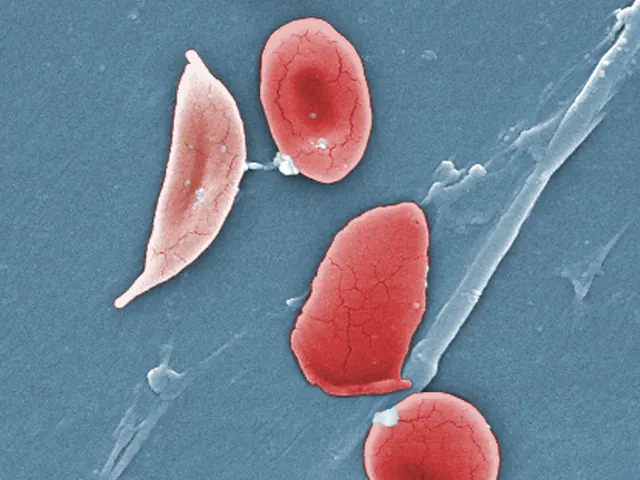

Genetic testing, anywhere.
Genetic tests for inherited conditions, designed to work without large equipment or a specialised laboratory. Built for hospitals, laboratories, clinicians and screening programmes across India.

Map summary. Sickle cell disease is most common in a belt across central India, running from south-eastern Gujarat through Madhya Pradesh, Maharashtra and Chhattisgarh to south-western Odisha. The National Sickle Cell Anaemia Elimination Mission covers 17 focus states: Gujarat, Maharashtra, Rajasthan, Madhya Pradesh, Jharkhand, Chhattisgarh, West Bengal, Odisha, Tamil Nadu, Telangana, Andhra Pradesh, Karnataka, Assam, Uttar Pradesh, Kerala, Bihar and Uttarakhand. Thalassaemia: found across India; studies report higher carrier frequencies in parts of Gujarat, Maharashtra, Punjab and West Bengal. SMA, DMD and bleeding disorders: found across India. Where we've worked: Hyderabad (laboratory and corporate office), Nandurbar (Maharashtra), Kothagudem (Telangana) and Jharkhand.
SourcesHockham et al., Scientific Reports (2018); National Sickle Cell Anaemia Elimination Mission, Ministry of Health and Family Welfare; published studies on thalassaemia in India. Indicative only, shown by state.
- Validated by ICMR (LitLife™-SCA)
- In collaboration with CSIR-CCMB
- Developed for national health programmes
- Made by a certified manufacturing partner
Most genetic tests never leave the big laboratory.
Genetic tests have usually depended on large equipment, specialised laboratories and highly trained staff. That keeps them out of reach of many district hospitals, smaller laboratories and screening camps, and of the people those places serve. As a result, inherited conditions are too often diagnosed late, or not at all.
-
1 · Sample
Dried blood spot card
-
2 · Test
No specialised laboratory
-
3 · Result
Quick turnaround
We design genetic tests the other way round.
Every Lightening Lives test starts from REASSURED, the published criteria for diagnostic tests that work outside specialised settings. Samples are simple to collect, the workflow needs minimal equipment, and results come back quickly.
A few drops of blood on a card.
A dried blood spot: simple and minimally invasive to collect.
No separate DNA extraction.
One step fewer between sample and result.
Minimal equipment.
No large equipment or specialised laboratory needed.
Ready for scale.
A high-throughput, automation-friendly workflow for large screening volumes.
Select a letter
- RReal-time connectivity
- Results can be read or shared digitally with decision-makers.
- EEase of specimen collection
- Samples are simple and minimally invasive to collect.
- AAffordable
- Affordable for the people tested and for the health system.
- SSensitive
- Few false negatives.
- SSpecific
- Few false positives.
- UUser-friendly
- Simple to perform, with minimal training.
- RRapid and robust
- Quick results; tests survive transport and storage without special conditions.
- EEquipment-free or simple
- No special equipment, or only simple devices.
- DDeliverable to end-users
- Reaches the people who need it most.
CriteriaLand et al., Nature Microbiology (2019).
A test for any inherited condition your programme needs
-
Sickle cell anaemia
LitLife™-SCA
Our ICMR-validated dried blood spot test.
-
Inherited blood disorder
Thalassaemia
Genetic testing for carrier screening and diagnosis.
-
Neuromuscular
Spinal muscular atrophy (SMA)
Designed for large-scale newborn screening, so treatment can start early.
-
Neuromuscular
Duchenne muscular dystrophy (DMD)
Earlier genetic diagnosis for timely care and family counselling.
-
Inherited blood disorder
Inherited bleeding disorders
Genetic testing for haemophilia and related clotting disorders.
-
Developed on request
Your condition next
Each test here began with a programme that needed one. Tell us the inherited condition you need to screen for, and we develop the test.
Talk to us about a new test →
Built for every setting that needs genetic testing
Hospitals and laboratories
Add genetic testing to your services without large equipment or a specialised lab.
Clinicians
Genetic answers sooner, so care and family counselling can start earlier.
Government health programmes
Validated, affordable tests for screening at population scale, from national missions to district health systems.
NGOs and CSR partners
Bring genetic screening to underserved communities, with tests and programme support from one partner.
Research partners
Develop and validate new REASSURED tests with us.
NoteWe work with institutions only. Looking for a test for yourself or your family? Please speak to your doctor or nearest government health facility.
Partner with us →Helping communities act on results
A test is only the start. We run awareness and genetic counselling programmes, most often on behalf of government health departments, so communities understand screening and families know what a result means for them.
Ask about our programmes →From the field
Our work in Nandurbar, Kothagudem and Jharkhand.
-

NandurbarMaharashtra
Toranmal, in the Satpura hills.
-

KothagudemTelangana
The Kinnerasani reservoir.
-

Jharkhand
Patratu Valley.
News, events and coverage
-

ValidationICMR
LitLife™-SCA is validated by ICMR
Our dried blood spot test for sickle cell anaemia, developed for the National Sickle Cell Anaemia Elimination Mission, is validated by the Indian Council of Medical Research.
-

CollaborationHyderabad
Working with CSIR-CCMB
An MOU with the CSIR-Centre for Cellular and Molecular Biology covers developing and commercialising our sickle cell assay.
-

National programme2047 goal
India's goal for sickle cell disease
The National Sickle Cell Anaemia Elimination Mission, launched in July 2023, aims to eliminate sickle cell disease as a public health problem by 2047.
Have a programme, a laboratory or a condition in mind?
Tell us what you're working on. We'll help you find the right test, or develop one with you.
Write or calladmin@lighteninglives.in+91 91825 88191